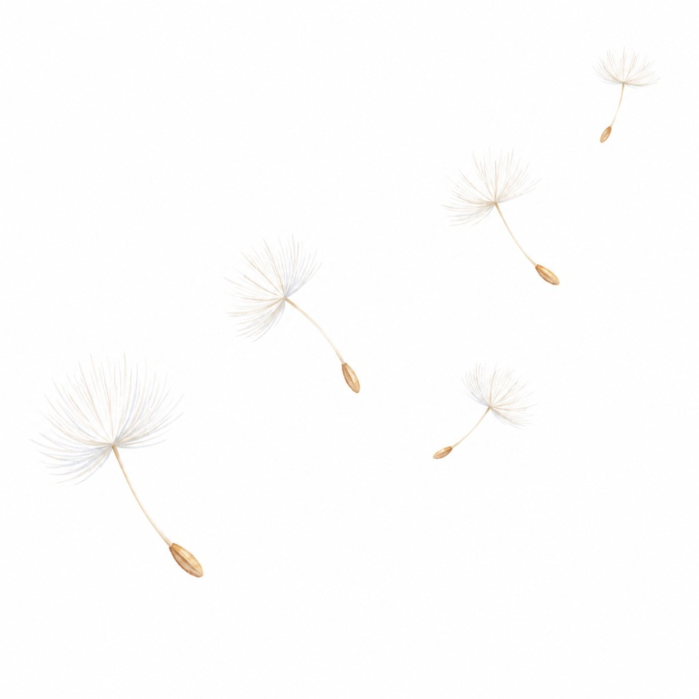
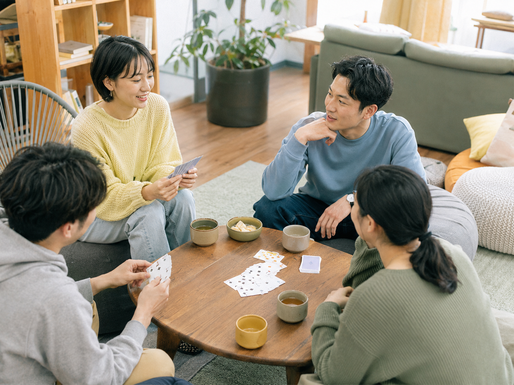
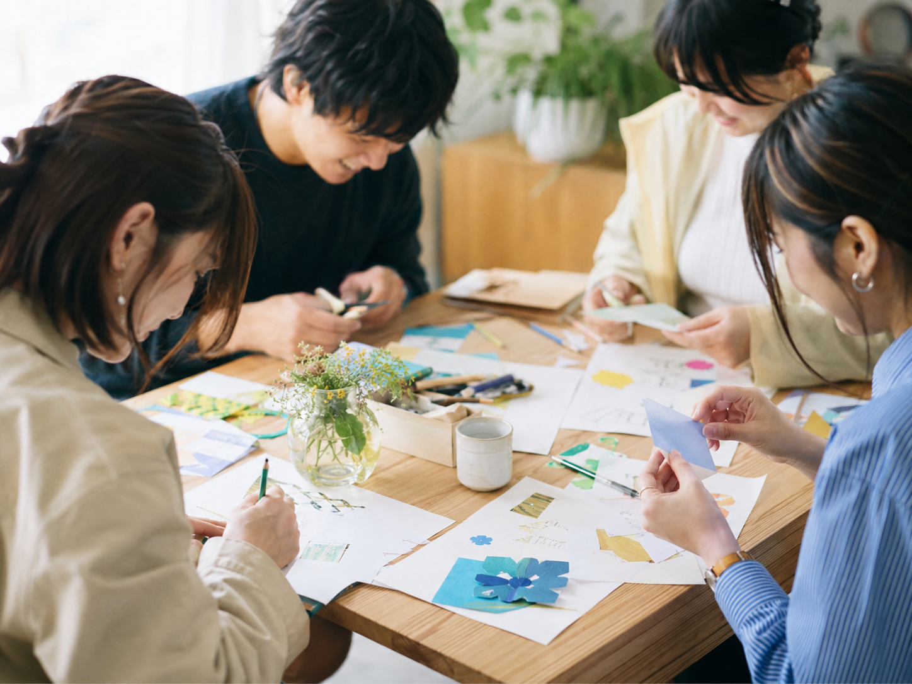
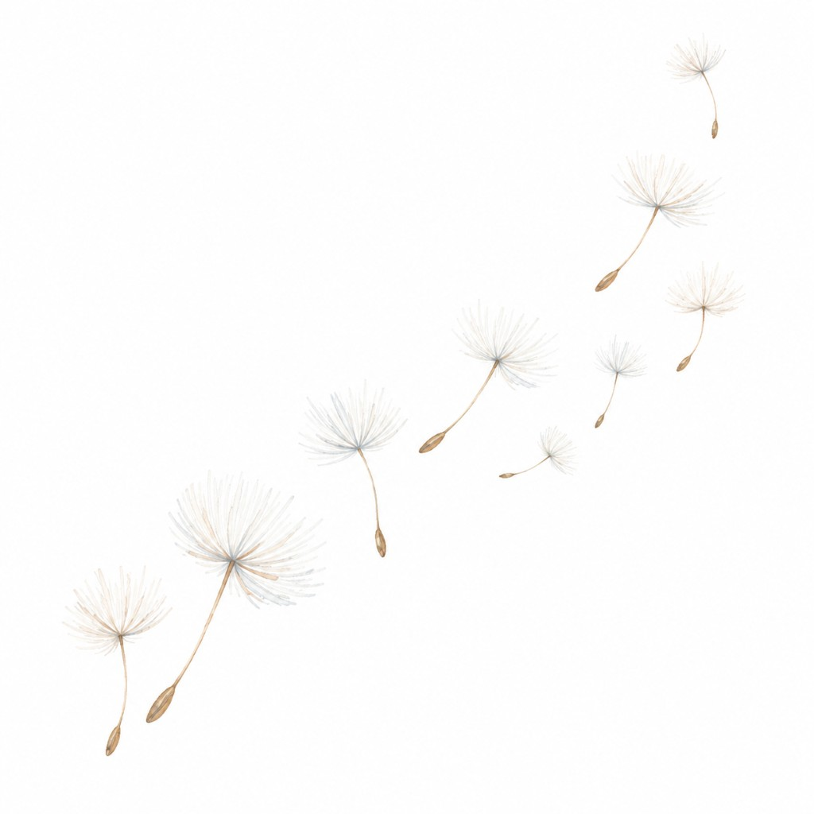

次のイベント
第一回目「つどい」を開催します。ほっと一息つける時間を過ごしませんか？
同じ経験をもつ当事者同士で集まって、日頃の想いを話したり、少しでもリラックスできる時間を過ごしませんか？
詳細を見る →
Our Activities
つどい・交流会、レクリエーション、講演活動、講師派遣を通じて、高知にやさしいつながりを育てます。

同じ経験をもつ仲間と、話したり遊んだり。
言いたくないことは言わなくても大丈夫。

ただ楽しむ時間も大切に。
当事者の声と専門知識を、学校・企業・地域へ届けます。
About us
当事者と保健医療福祉分野の研究者が立ち上げた任意団体です。「同じ経験をした仲間がいる」と感じられる場所を、丁寧につくっています。
Join & Partner
当事者、学生、専門職、企業・団体。立場の違う人が関わることで、活動の選択肢が広がります。
Join our team
企画、当日の運営、広報など、できる範囲から一緒に活動する仲間を募集しています。
For organizations
活動に賛同し、高知の子ども・若者の居場所づくりを一緒に支えてくださる企業・団体を募集しています。
Support us
寄付は交流会の開催や活動を続けるために大切に活用します。

Contact
ご相談、参加、取材、講演のご依頼は、お問い合わせフォームからお送りください。